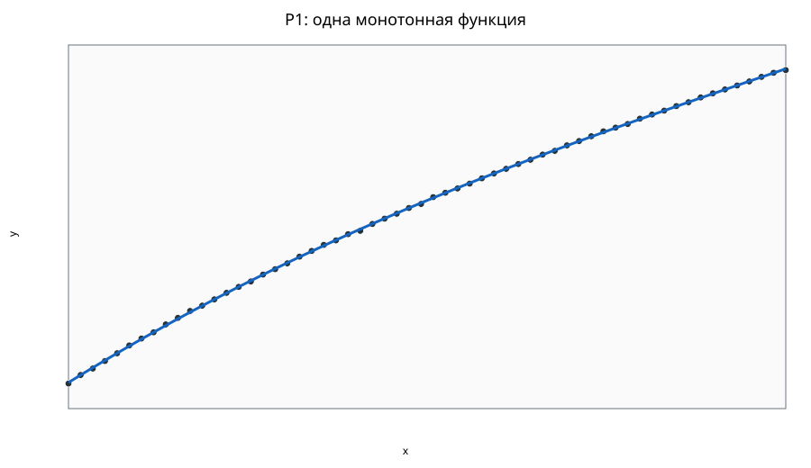
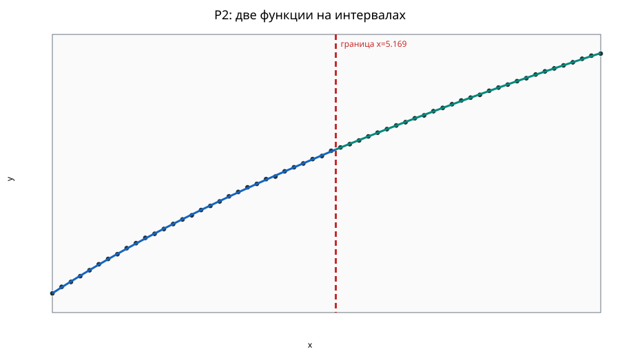
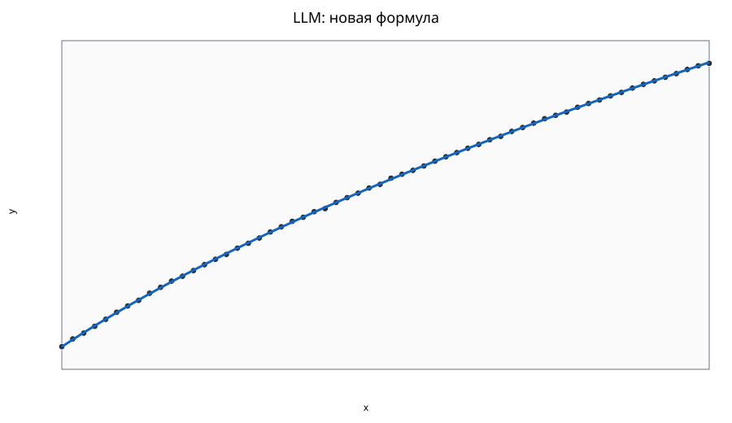

Состояние решения: UNSTABLE_SELECTION.
Предупреждения: LLM_FORMULA_ALREADY_IN_REGISTRY, LLM_FORMULA_PROPOSALS_REJECTED, LLM_TRAINING_SUMMARY_DISCLOSED, P2_NOT_RECOMMENDED
Использовано 60 из 60 строк; пропущено 0. Уникальных x: 60.
P1 и P2 получены полным алгоритмическим поиском по реестру.
LLM предлагает новые выражения; их параметры оптимизируются численно. Статус LLM: ACCEPTED.
Максимум две ветви, полиномиальная степень ≤3, монотонность на всём интервале, непрерывность стыка, баланс 40/60 и коэффициенты с точностью 0.001.
Refit R²: 1.000
OOF R²: 1.000
f(x)=1.512+5.671*((x-0.000)/10.000)-2.472*((x-0.000)/10.000)^2+0.791*((x-0.000)/10.000)^3
Refit global R²: 1.000
OOF R²: 1.000
f(x)=1.501+3.053*((x-0.000)/5.169)-0.928*((x-0.000)/5.169)^2+0.266*((x-0.000)/5.169)^3 for x<=5.169; 3.892+1.787*((x-5.169)/4.831)-0.185*((x-5.169)/4.831)^2 for x>5.169
| Интервал | n | доля | R² |
|---|---|---|---|
| left | 31 | 0.517 | 1.000 |
| right | 29 | 0.483 | 1.000 |
Refit R²: 1.000
Ветвей: 1; параметров: 3.
f(x)=1.499+4.000*((sqrt(1+(3.013*((x-(0.0))/(10.0-(0.0)))))-1)/(sqrt(1+(3.013*1))-1))
LLM предлагает форму одной кривой и выражения для двух участков. Численный алгоритм
подбирает коэффициенты и границу, затем сравнивает варианты по обучающему BIC:
n · ln(MSE) + k · ln(n). Меньше — лучше; дополнительная граница увеличивает k.
Контрольные точки в этом выборе не участвуют.
| Вариант LLM | Проверено / допустимо | Лучший train RMSE | Параметров, включая границу | BIC |
|---|---|---|---|---|
| Одна кривая | 4 / 4 | 0.007 | 3 | -471.567 |
| Две функции по участкам | 8 / 8 | 0.006 | 6 | -460.914 |
Выбрано: одна кривая — минимальный BIC среди проверенных гипотез.
Таблица относится к обучающему разделению. Формулы выше повторно обучены на всех точках.
Обучение: 48 точек; проверка: 12. Группы одинаковых x не разделяются. LLM не видела контрольные точки и их оценки. R² считается относительно среднего обучающей выборки. Это оценка интерполяции одного разделения; она отличается от OOF выше. Сохранённые итоговые модели повторно обучены на всех точках.
| Вариант | R² | RMSE | MAE | Статус |
|---|---|---|---|---|
| P1 | 1.000 | 0.007 | 0.005 | AVAILABLE |
| P2 | 1.000 | 0.006 | 0.005 | AVAILABLE |
| LLM | 1.000 | 0.005 | 0.005 | AVAILABLE |
Все результаты сравнения · Модель P1 · Модель P2



Relative MSE uplift: 0.130; bootstrap 90% interval: [-0.161, 0.372].
Флаги основаны на grouped OOF-остатках рекомендуемой процедуры; они ничего не удаляют.
Больших OOF-остатков по текущему robust rule не обнаружено.